2 Set up your training
This chapter takes you through everything you need to do once, at the start, to get your own training website. You will create your own copy of the SciLifeLab Training Webpage Template, publish it as a website, and set it up on your computer so you can edit it.
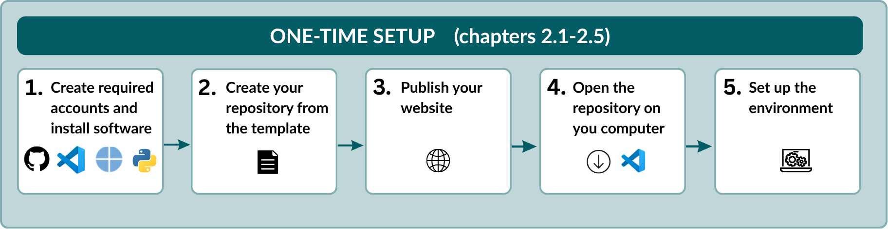
Once you are done, the next chapter, Regular workflow, shows the few steps you repeat every time you update your website.
2.1 Install the software
To work with the template, you need a free GitHub account and four free programs. If you already have some of them, you can skip those.
| What | What it does for you | Where to get it |
|---|---|---|
| GitHub account | Stores your training online and publishes the website | https://github.com |
| Visual Studio Code | The program you use to edit files and upload your changes | https://code.visualstudio.com/ |
| Git | Copies files between your computer and GitHub, in the background | https://github.com/git-guides/install-git |
| Python | Runs the small scripts that build your website | https://www.python.org/downloads/ |
| Quarto | Turns your files into a website, and shows you a preview | https://quarto.org/docs/get-started/ |
Install each program with the default settings. Then open Visual Studio Code (VS Code) once, to check that it starts.
If your training will be hosted in a GitHub organisation, such as SciLifeLab-Training or NBISweden, ask an administrator of that organisation to add your GitHub account before you continue.
This guide uses VS Code for all editing and uploading. You can use another editor if you prefer, but the instructions and screenshots assume VS Code.
Done when: you have a GitHub account, and VS Code opens on your computer.
2.2 Create your repository
A repository is the folder on GitHub that holds everything for your training: the information about it, the materials, and the website. You will create your own repository as a copy of the template. The template itself stays unchanged.
- Open the SciLifeLab Training Webpage Template on GitHub.
- In the top-right corner of the page, click the green Use this template button and select Create a new repository.
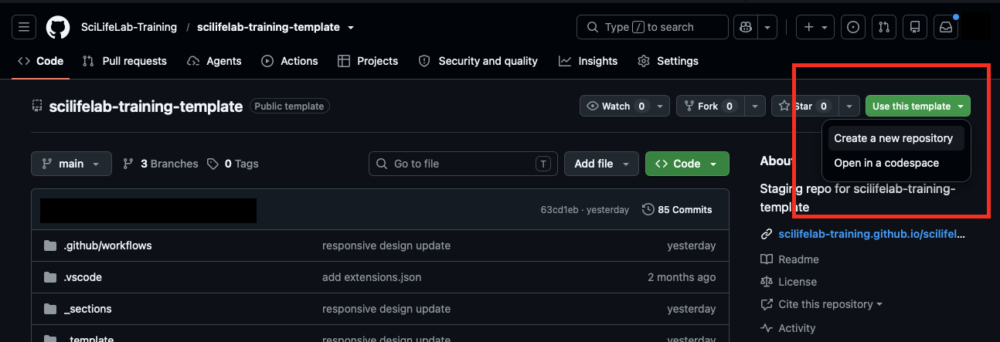
- Fill in the form:
- Turn Include all branches on. This is required: the template keeps the landing page and each training instance in separate branches (you will learn about these later), and you need all of them.
- Under Owner, select the GitHub organisation or account where the repository should live, for example SciLifeLab-Training, NBISweden, or your personal account.
- Under Repository name, enter a short name in lowercase, with hyphens instead of spaces, for example
introduction-to-r. The name becomes part of your website address, so choose it carefully. - Under Visibility, choose Public, so participants can see the website and materials.
- Click Create repository.
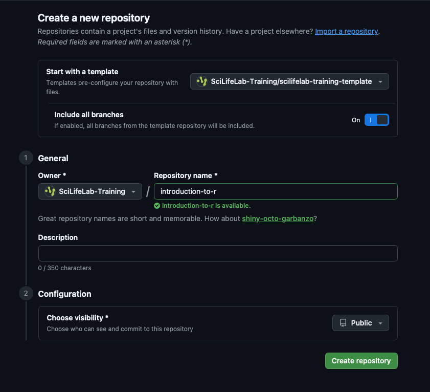
GitHub now opens your new repository. Check the name at the top of the page: it should be the name you just chose, not the template’s name.
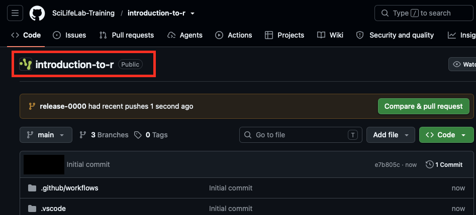
If other people will help develop or maintain the training, give them access to the repository. You can also do this later.
- In your repository, click Settings.
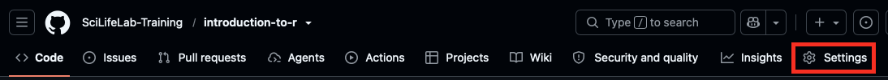
- Under Access in the menu on the left, click Collaborators and teams.
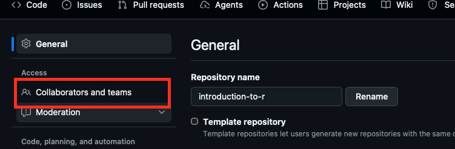
- Click Add people or Add teams.
- Search for the person or team, choose a role, and click Add.
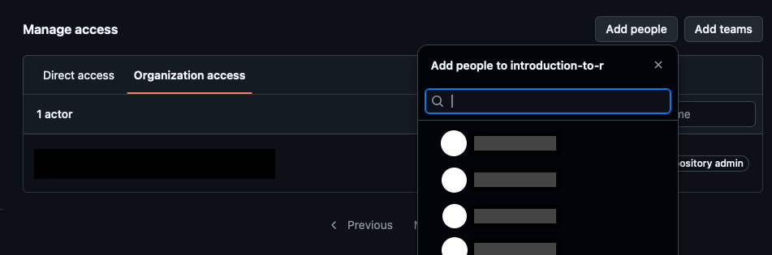
The options you see depend on whether the repository belongs to you or to an organisation, and on your permissions in that organisation.
Done when: you see your own repository on GitHub, with the name you chose.
2.3 Publish your website
Your new repository already contains a ready-made copy of the template website, and GitHub usually publishes it and sets it up by itself. In this step you check two settings, and add your website link to your repository’s main page.
Check that your website is online
- In your repository, click Settings, then Pages in the menu on the left.
- At the top of the page, look for Your site is live at, followed by your website address. It looks like
https://ORGANISATION.github.io/REPOSITORY-NAME/, with your organisation (or user name) and repository name filled in.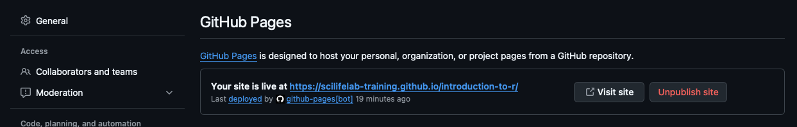
For now, your website shows the template’s example content. It changes to your own content the first time you upload a change.
Sometimes GitHub doesn’t switch on publishing by itself. You can do it yourself:
- On the same page, under Source, choose Deploy from a branch.
- Under Branch, choose gh-pages and / (root), and click Save.
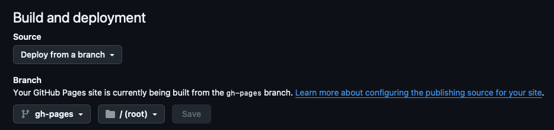
- Wait a minute or two and refresh the page. Your site is live at now appears at the top.
Check that your website can be updated
Every time you upload a change, GitHub runs a small automatic process that rebuilds your website. This process needs permission to update the website.
- Click Settings, then Actions → General in the menu on the left.
- Scroll down to Workflow permissions, and check that Read and write permissions is selected.
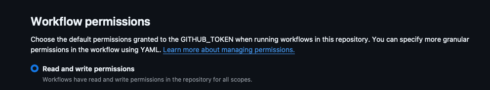
Select Read and write permissions and click Save.
If you can’t select it because the option is greyed out, your organisation controls this setting. Ask an administrator of the organisation to allow it for your repository.
Add the website link to your repository
Show the website address on your repository’s main page, so you can always find your website quickly:
- Click the Code tab to go back to the repository’s main page.
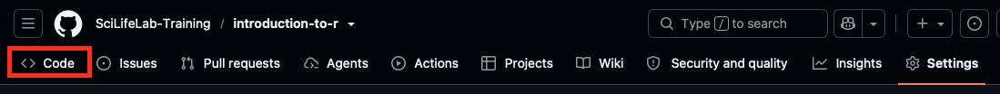
- On the right-hand side, next to About, click the gear icon .
- Tick Use your GitHub Pages website and click Save changes.
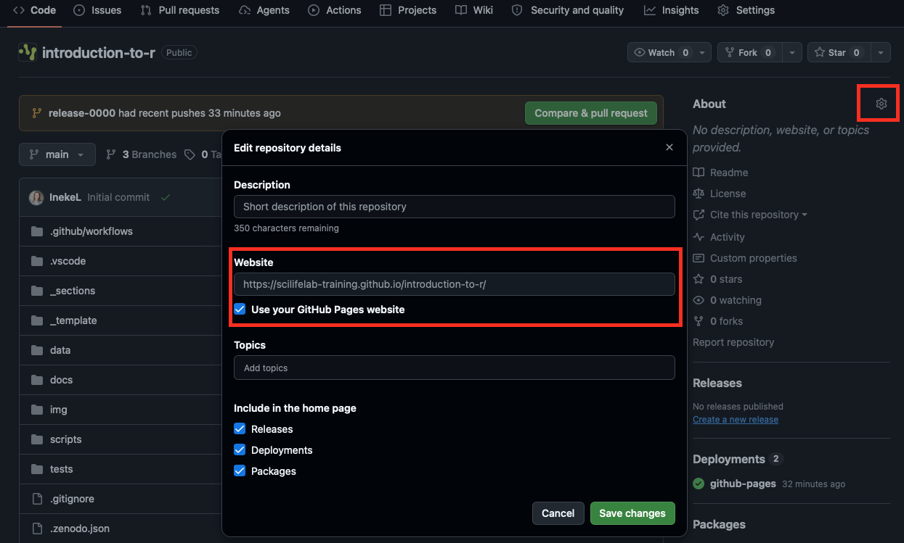
Done when: the website link appears under About, and clicking it opens the template website.
2.4 Open the repository on your computer
So far, your repository only exists on GitHub. To edit it, you make a copy on your computer. This is called cloning.
Working on a copy has a big advantage: nothing you change is visible to anyone else until you decide to upload it. You can try things out, look at the result, and undo mistakes, all safely on your own computer.
On your repository’s main page on GitHub, click the green Code button, make sure HTTPS is selected, and copy the address.
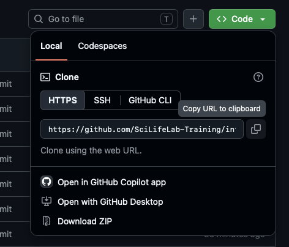
Open VS Code and click Clone Git Repository on the start screen. If you don’t see it, open View → Command Palette, type
Git: Cloneand press Enter.
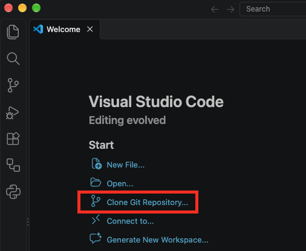
Paste the HTTPS address you copied and press Enter.
Choose where to save the repository on your computer, for example a folder called
GitHubinsideDocuments, and click Select as Repository Destination.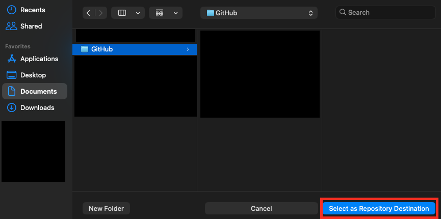
When VS Code asks whether to open the repository, click Open.
The files and folders of your repository now appear in the Explorer panel on the left side of VS Code. Throughout this guide, you open files by clicking them there.
If VS Code suggests installing recommended extensions, click Install. They help VS Code understand the files used in the template.
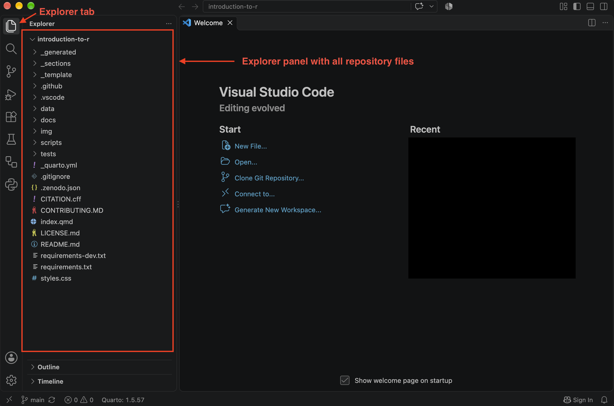
cd ~/Documents/GitHub
git clone https://github.com/ORGANISATION/REPOSITORY-NAME.gitThen open the new folder in VS Code with File → Open Folder…
✓ Done when: you see your repository’s files in the Explorer panel in VS Code.
2.5 Set up the environment
Your website is built by a few small Python scripts that come with the template. These scripts need one extra Python package. In this step you install it in a separate, self-contained environment inside your repository folder, so it doesn’t interfere with anything else on your computer.
You only do this once for each repository. You don’t need to understand the commands: copy each one exactly as shown.
Open a terminal
A terminal is a window where you type commands. In VS Code, choose Terminal → New Terminal.
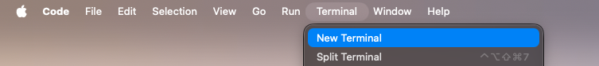
The terminal opens at the bottom of the window, already inside your repository folder.
To run a command from this guide, copy it, paste it into the terminal, and press Enter.
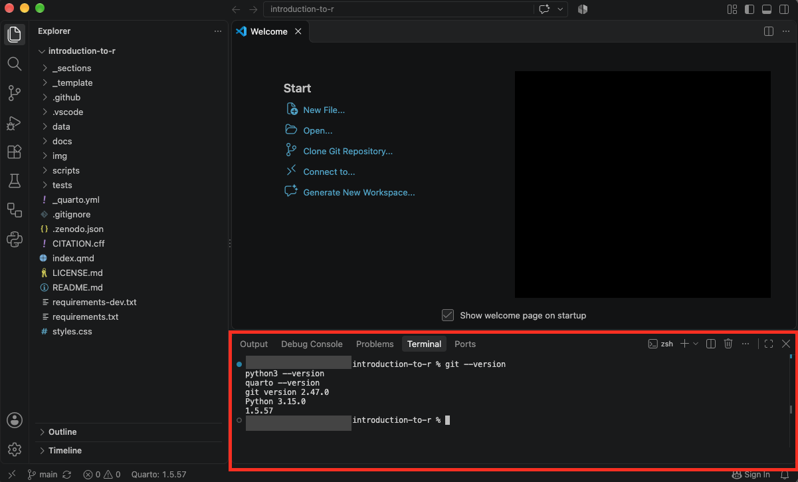
Check the software
First, check that Git, Python and Quarto were installed correctly. Run these commands one by one:
git --version
python3 --version
quarto --versiongit --version
python --version
quarto --versionEach command should print a version number, for example Python 3.12.4 (see image above). If one says command not found, install that program again, restart VS Code, and try again.
Create the environment
Run these three commands one by one. The last one can take a minute.
python3 -m venv .venv
source .venv/bin/activate
python -m pip install -r requirements.txtpython -m venv .venv
.venv\Scripts\activate
python -m pip install -r requirements.txtThe first command creates the environment, the second switches it on, and the third installs what the scripts need. When the environment is switched on, the terminal line starts with (.venv):
(.venv) username@computer introduction-to-r %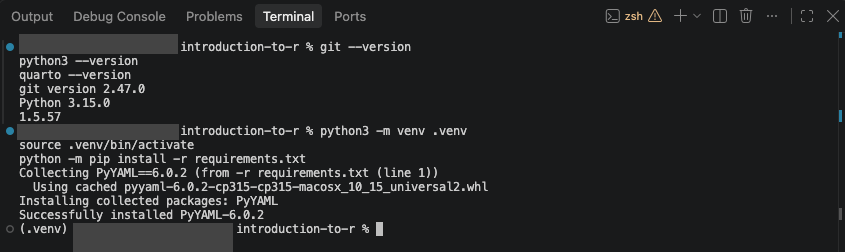
Let VS Code switch on the environment
The environment has to be switched on each time you open a new terminal. You can let VS Code do that for you:
- Press Cmd+Shift+P (macOS) or Ctrl+Shift+P (Windows and Linux).
- Type
Python: Select Interpreterand press Enter. - Choose the option that shows
.venv.
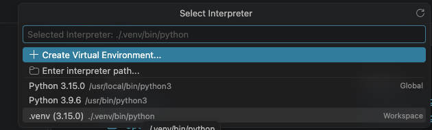
From now on, every new terminal you open in this repository starts with the environment switched on.
Done when: a new terminal (Terminal → New Terminal) starts with (.venv).
You’re all set!
Your training has its own repository and website, and your computer is ready to edit it. You won’t need to repeat any of these steps for this training.
Continue with Regular workflow to make your first change and see it appear on your website.